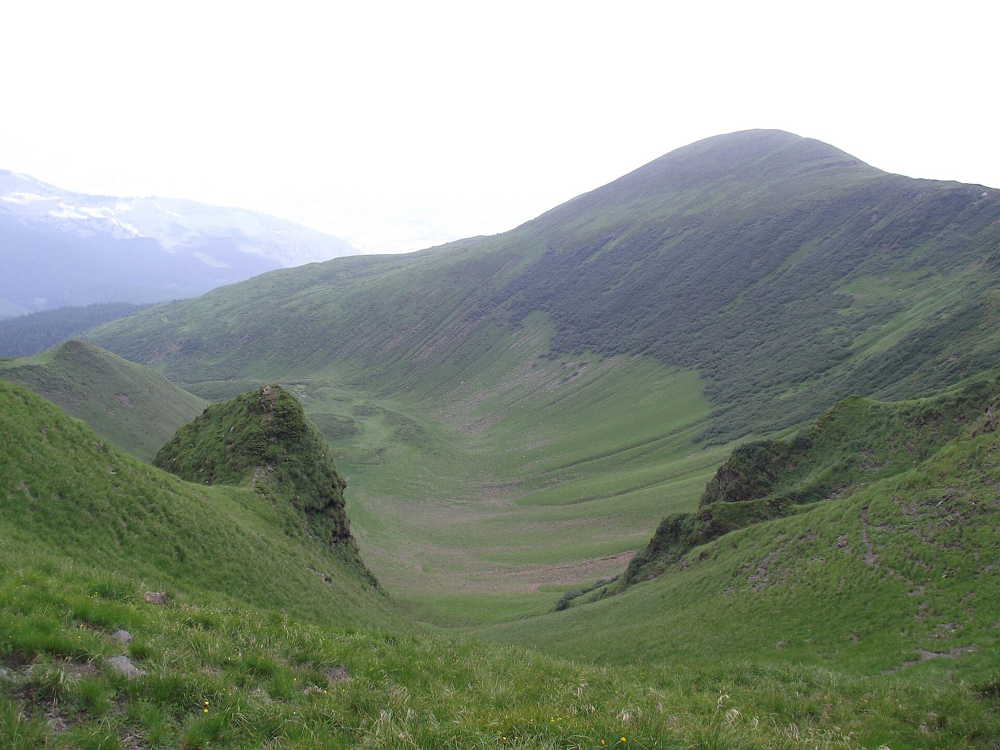

Свидовець — гірський масив Карпат, який відомий своїми широкими луками, льодовиковими озерами та пологими хребтами. Тут розташовані такі вершини, як Близниця та Стіг.
Цей регіон ідеальний для тих, хто шукає спокій, насолоду природою та незабутні пейзажі.
